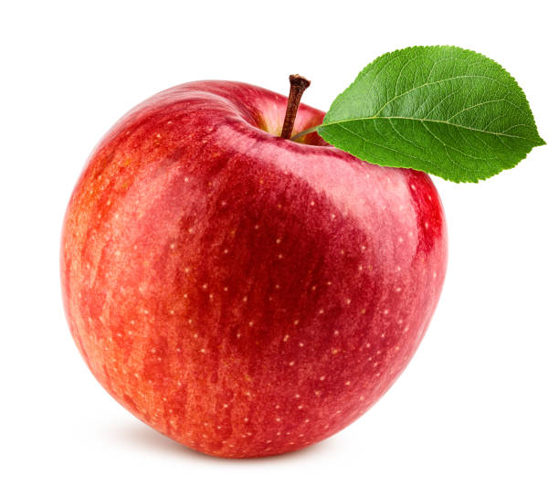
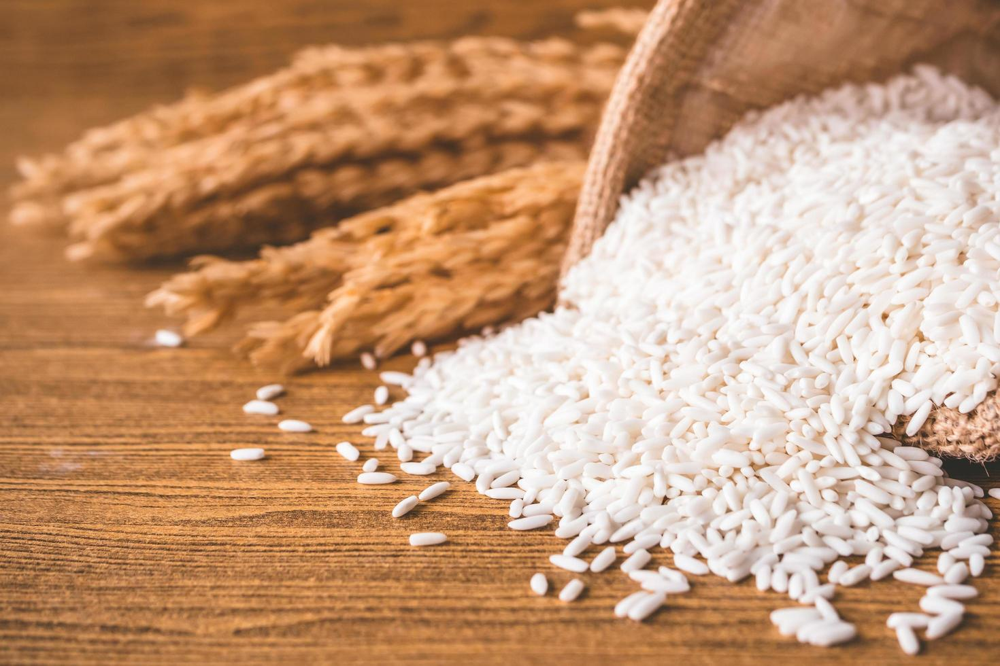
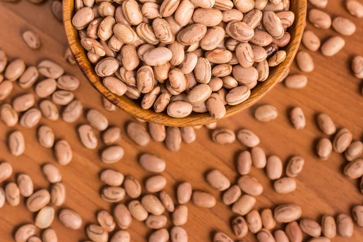

Produtos
Frutas e Verduras
 Maçã - R$ 2,00/kg - Maçãs fresquinhas e crocantes.
 Cenoura - R$ 3,50/kg - Orgânica e nutritiva.
Cenoura - R$ 3,50/kg - Orgânica e nutritiva.
Produtos Alimentícios Não Perecíveis
 Arroz 5kg - R$ 20,00 - Tipo 1, alta qualidade.
 Feijão 1kg - R$ 8,00 - Preto, selecionado.
Produtos de Higiene e Limpeza
 Sabão em pó 1kg - R$ 12,00 - Roupas limpas e perfumadas.
Sabão em pó 1kg - R$ 12,00 - Roupas limpas e perfumadas.
 Início |
Início |